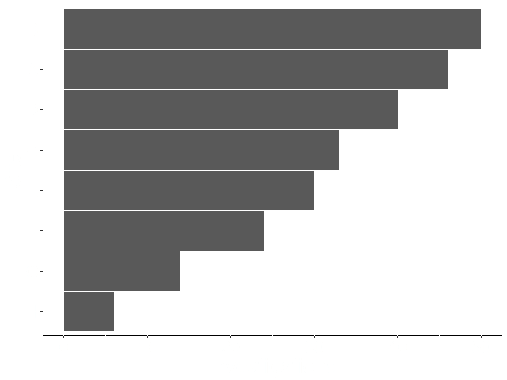
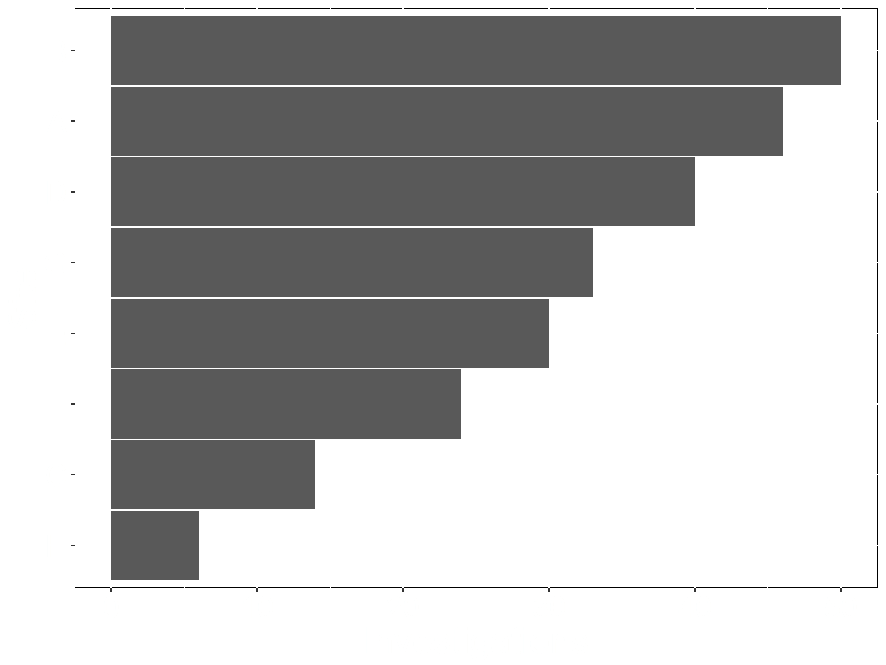

Beyond the Big Crunch of Excel:
The Big Bang of Digital Visualizations
Marcus Adams
April 10, 2019
At a time when slide rules roamed the land…
…one man, JonJohn Snow, would dare to visualize… 

…and change public health forever…
Plots in the Time of Cholera

Be Purposeful
Philosophical Considerations

Be Deliberate
Elementary Graphical-Perception Tasks (Cleveland 1985)
- Position Along Common Axis
- Position on Identical, Nonaligned Scales
- Length
- Angle
- Slope
- Area
- Volume/Density/Color Saturation
- Color Hue


 

Then There Was Excel…


“That’s an appropriate
use of a 3D bar chart”
use of a 3D bar chart”
—No One Ever
The Digital Triad of Power

Static Digital Visualizations

Interactive Visualizations

Multi-Modal